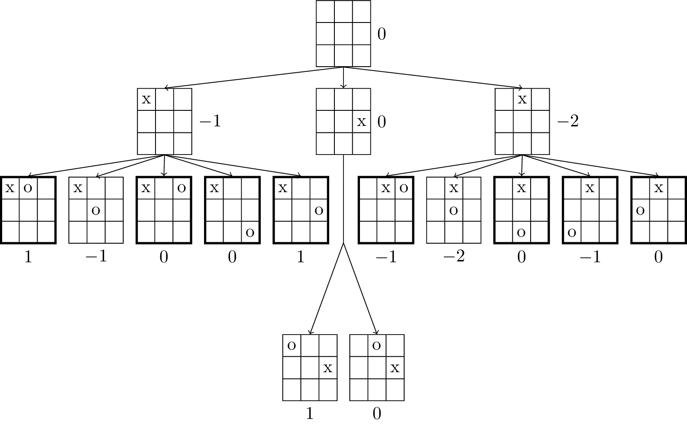

\documentclass[tikz]{standalone}
\usepackage{forest,calc}
\forestset{
make tab/.style args={#1:#2:#3/#4:#5:#6/#7:#8:#9}{%
content={%
\tabcolsep=.4\tabcolsep
\begin{tabular}{p{\widthof{x}}|p{\widthof{x}}|p{\widthof{x}}}
#1 & #2 & #3\\\hline#4\\\hline#7	
\end{tabular}}},
label position r/.initial=right,
label position b/.initial=below
}
\begin{document}
\begin{forest}
TTT/.style args={#1:#2}{
make tab/.expanded=\forestove{content},
label={\pgfkeysvalueof{/forest/label position #1}:$#2$},
edge={->}
},
TTT*/.style={
make tab=::/::/::,
content/.expand once=%
\expandafter\vphantom\expandafter{\romannumeral-`0\forestov{content}},
draw=none,
append after command={(\tikzlastnode.north) edge (\tikzlastnode.south)},
for descendants={before computing xy={l*=1.8}},
},
th/.style=very thick,
for tree={node options=draw, inner sep=+0pt, parent anchor=south, child anchor=north}
%
[::/::/::, TTT=r:0
[x::/::/::, TTT=r:-1
[x:o:/::/::, TTT=b: 1, th]
[x::/:o:/::, TTT=b:-1]
[x::o/::/::, TTT=b: 0, th]
[x::/::/::o, TTT=b: 0, th]
[x::/::o/::, TTT=b: 1, th]
]
[::/::x/::, TTT=r:0,
[,TTT* % this is just cheating :(
[o::/::x/::, TTT=b:1]
[:o:/::x/::, TTT=b:0]
]
]
[:x:/::/::, TTT=r:-2
[:x:o/::/::, TTT=b:-1, th]
[:x:/:o:/::, TTT=b:-2]
[:x:/::/:o:, TTT=b: 0, th]
[:x:/::/o::, TTT=b:-1, th]
[:x:/o::/::, TTT=b: 0, th]
]
]
\end{forest}
\end{document}Created by David Li